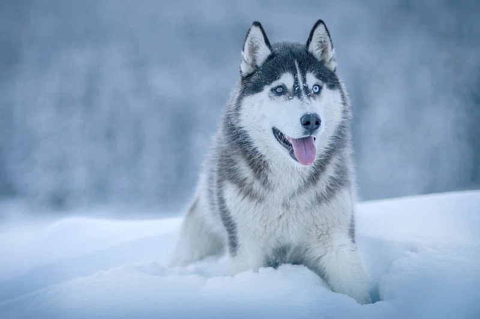
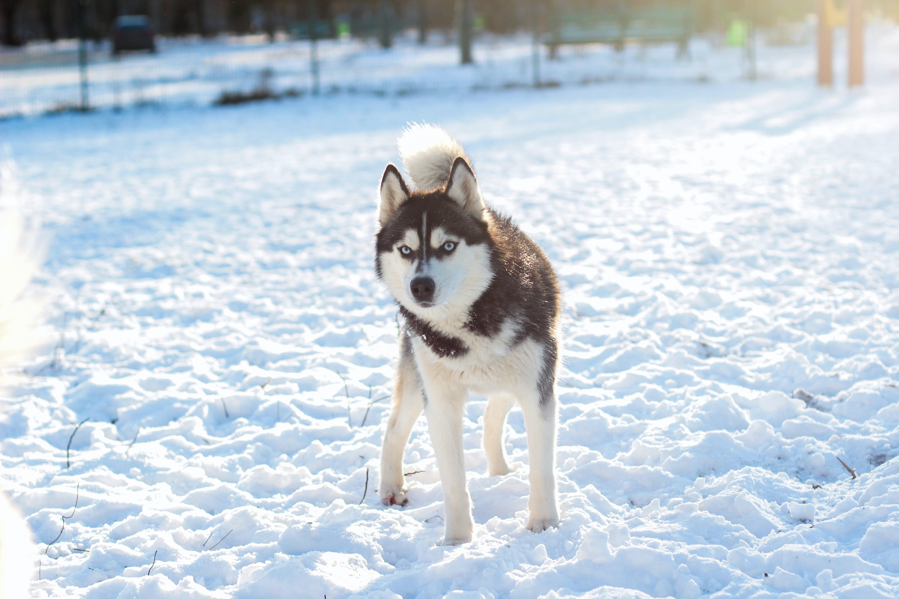
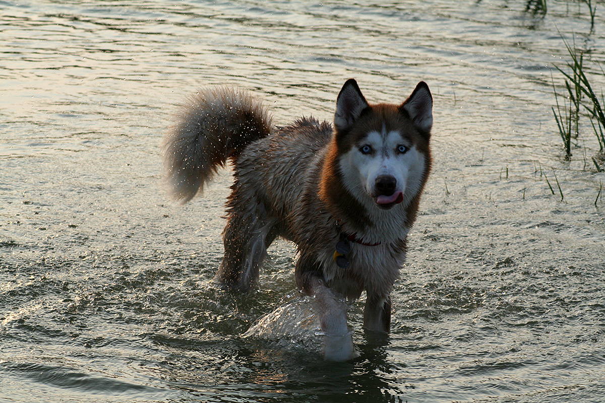
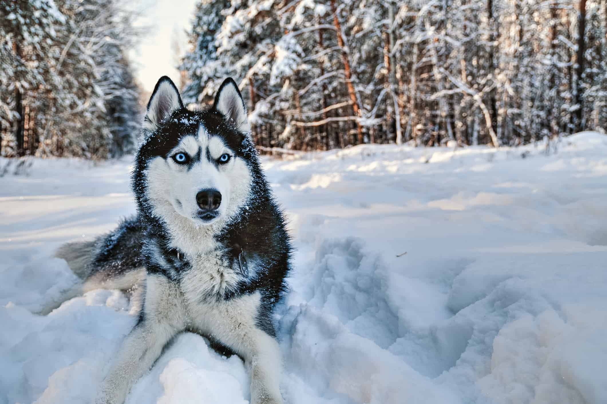
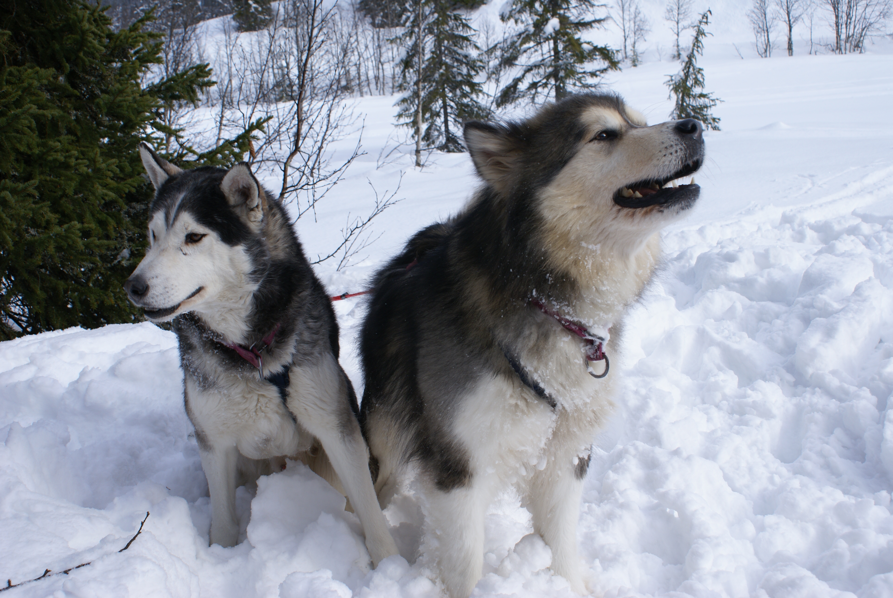
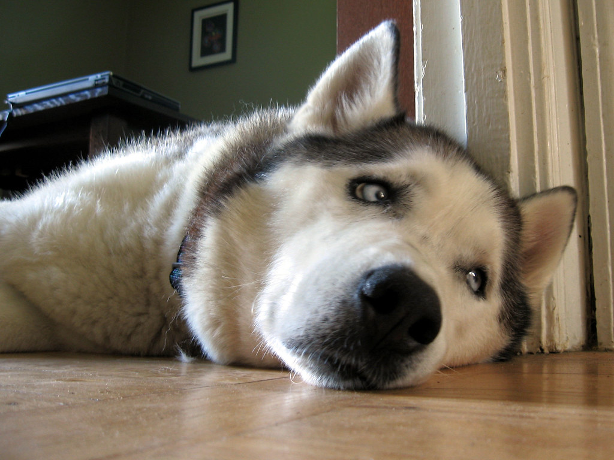
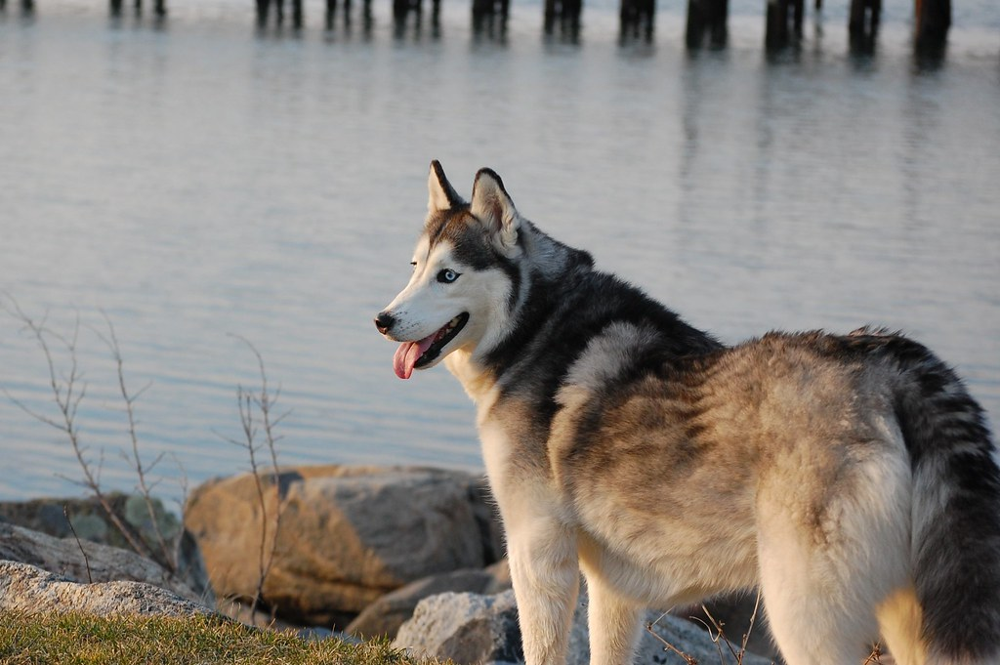

|  |  |
|  | |
Huskies are remarkable dogs that can make anyone smile. They are known for their striking appearance. They have a medium to large size, with a strong and muscular build. Their most distinctive feature is their beautiful double coat. The outer coat is thick and insulating, while the undercoat is soft and dense. Huskies come in a variety of colors, including black, gray, white, and even red. Their almond-shaped eyes can be blue, brown, or a combination of both, which adds to their already captivating look.
Huskies have a friendly and outgoing personality. They are known for their playful and adventurous nature. These dogs are full of energy and love to explore their surroundings. Huskies are also very special animals, and they enjoy the company of their human family. They are known to be affectionate and loyal, making them great companions.
|  |  |
|  |  |
Huskies are intelligent dogs because they are proficient problem-solvers and are very independent. However, this independence can make them somewhat stubborn during their training at times, so it is best to give positive reinforcement such as treats to keep them engaged and happy.
Huskies are high-energy dogs that require an abundance of exercise to keep them happy and healthy. They have a strong instincts to move around and explore, so be sure to regularly give them time and space to walk, jog, and play around in a fenced area. Providing them with mental stimulation, such as puzzle toys or training sessions, can also help channel their energy.
Check out this page to learn how to properly care for huskies.